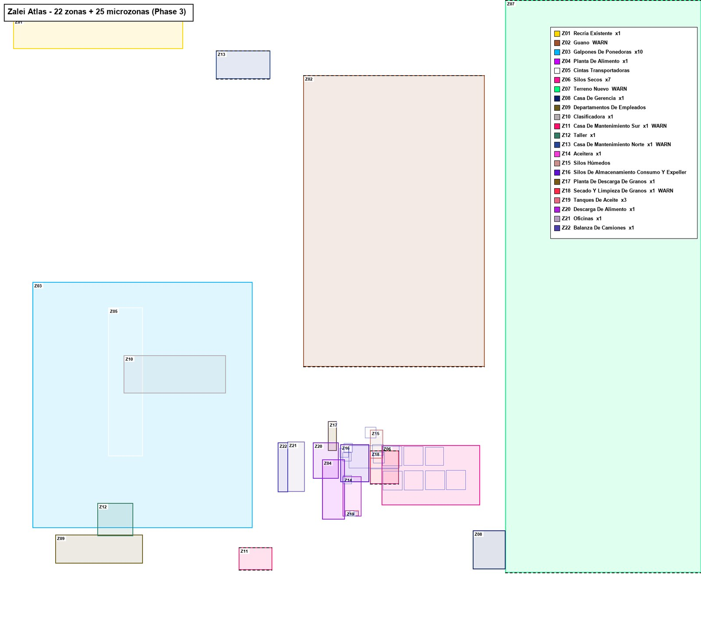
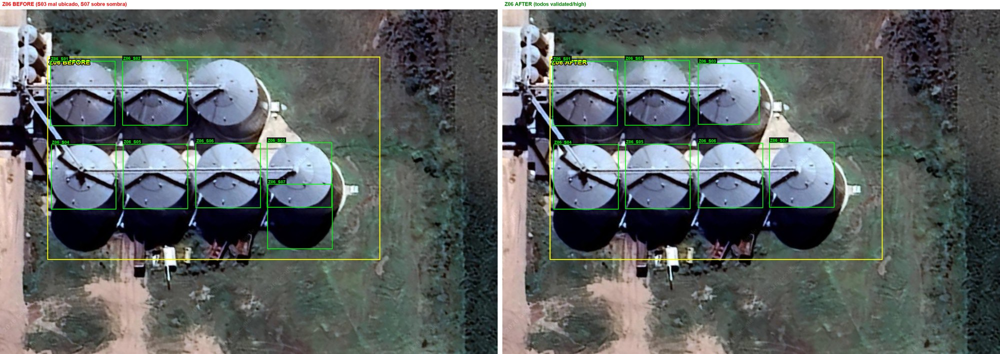
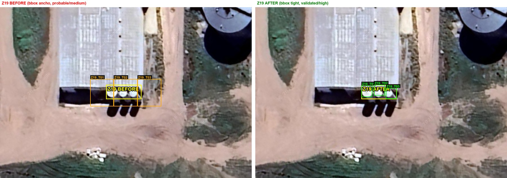
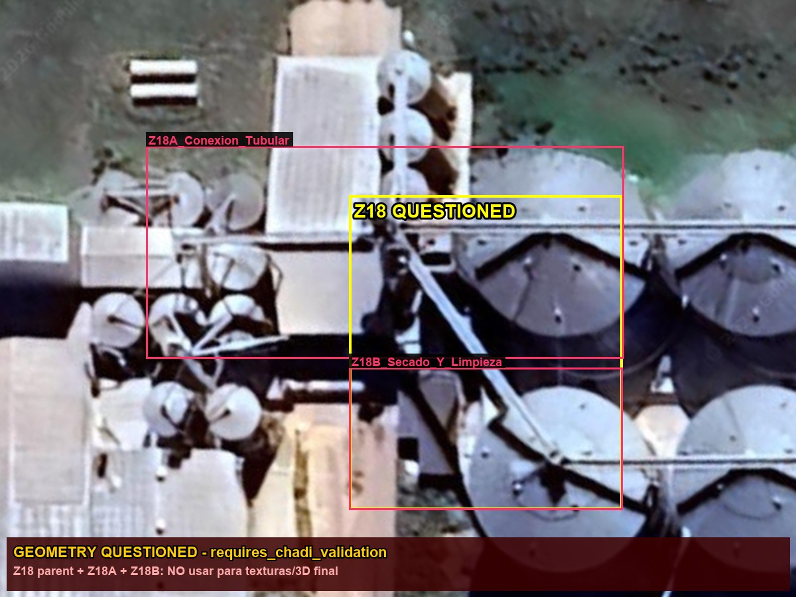
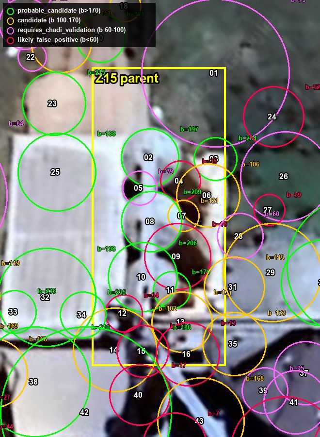
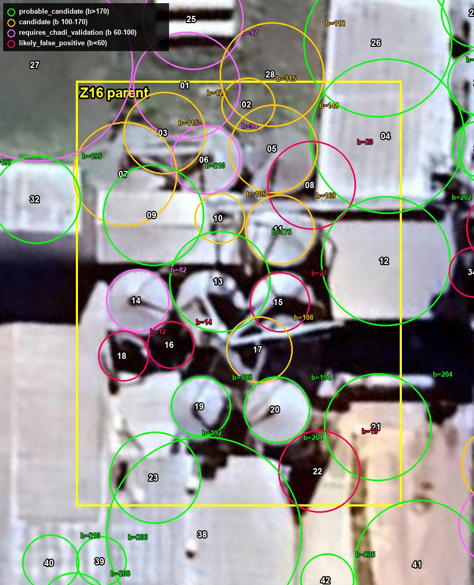

🗺️
Mapa 2D Atlas
Vista general del predio con zonas y microzonas.
- Ideal para validar ubicación general.
- Permite hacer zoom.
- Sirve como base de verdad.
MapaCoordenadasZonas
Este Atlas permite pasar de una imagen satelital a planos, microzonas, 3D, renders con texturas y recorribles sin perder ubicación, calidad ni detalles.
No estamos haciendo una imagen linda “a ojo”. Estamos armando una base técnica: satélite, coordenadas, crops, microzonas, etiquetas y máscaras. Con eso después se pueden producir renders de distintos estilos sin que la IA invente edificios, cambie posiciones o pierda detalles chicos.
Ya están separados elementos críticos como Silos Secos y Tanques De Aceite. Quedan zonas para validar con Chadi antes de hacer el 3D/texturas finales.
Chadi puede elegir si quiere revisar el mapa técnico, los crops de detalle, la maqueta 3D o directamente las opciones de renders futuros.
Vista general del predio con zonas y microzonas.
Recortes de alta resolución para revisar cada zona sin que se mezcle todo.
Maqueta técnica para revisar volumen, posición y lectura espacial.
Esto es lo que permite no perder calidad ni detalles: cada parte importante se transforma en zona, microzona, máscara o volumen.

22 zonas generales organizadas sobre la imagen satelital. Sirve como base global.

Los 7 Silos Secos ya están separados como microzonas individuales.

Los 3 Tanques De Aceite fueron ajustados con bboxes individuales.

Necesitamos confirmar exactamente dónde está Secado Y Limpieza De Granos para no confundirlo con una pasarela superior.
Con que responda números alcanza. No hace falta usar nombres técnicos perfectos.

Indicar qué números son realmente Silos Húmedos. Si alguno sobra, decir “Descartar Número X”.

Indicar qué números corresponden a esa zona. Si falta algo no numerado, marcarlo o describirlo.
Responder con los números que sean Silos Húmedos.
Ejemplo: “Z15: 03, 07, 12. Descartar 05.”
Responder con los números que sean Silos De Almacenamiento / Consumo / Expeller.
Ejemplo: “Z16: 01, 02, 04, 08, 11.”
Marcar dónde está Secado Y Limpieza De Granos.
Clave: no confundir con la pasarela/tubular superior.
Una vez validado el Atlas, se pueden generar visuales en distintos niveles de realismo sin perder la ubicación real.
Vista completa del predio tipo drone, con texturas realistas y etiquetas opcionales.
Render específico de Planta De Alimento, Silos, Galpones, Guano o Terreno Nuevo.
Comparar estado actual con ampliaciones o mejoras futuras.
Versión limpia para presentación: zonas, etiquetas, leyenda, colores sobrios y lectura clara.
Imagen final limpia para web, carpeta comercial o presentación visual.
Mismo render, pero con rótulos prolijos para explicar cada sector sin deformar texto.
Esto es probablemente lo que más le interesa al padre de Chadi: recorridos, 3D y texturas, pero con control real del detalle.
Una maqueta 3D que se abre en navegador. Se puede rotar, acercar, prender/apagar etiquetas y revisar zonas.
Un video tipo drone/cámara que recorra acceso, galpones, planta, silos y terreno nuevo.
Modelo con techos, silos metálicos, caminos, suelo, guano plano y materiales realistas.
Ver cómo quedarían los 2 galpones nuevos, silo-bolsas y ampliaciones antes de construir.
Página privada con mapa, crops, renders, 3D y pendientes de validación.
Máscaras SVG/PNG para texturas, etiquetas separadas y renders por zonas.
Copiar, pegar link y mandar.